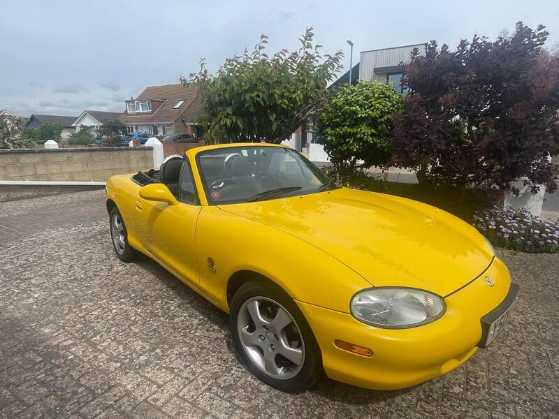
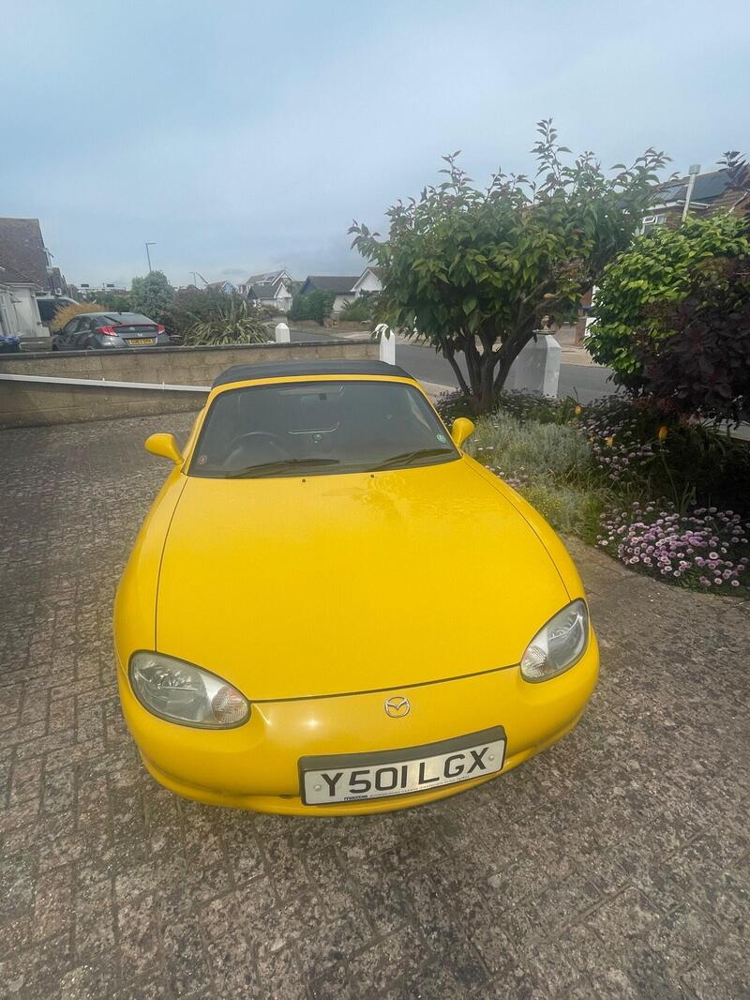
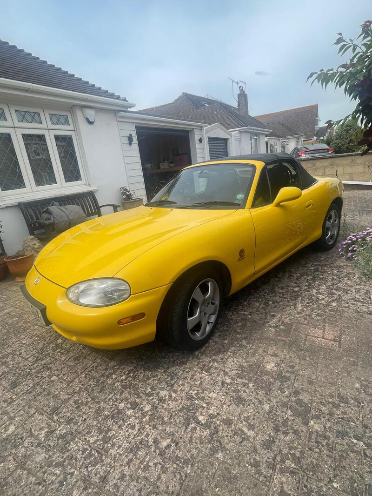
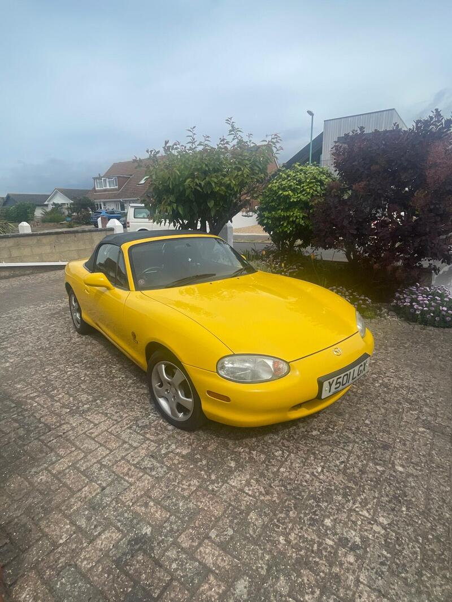

← All NB-FLRanked #4 of 28 for value




Seller photos from the AutoTrader ad.
✓ Checked 12 OctMay be pre-facelift
2001 · California
2001 MX-5 1.6 California
Lovely and low-mileage, but it may not be a facelift car.
£4,45033,921 miles · Shoreham-by-Sea
View on AutoTrader ↗Key facts
| Price | £4,450 |
|---|---|
| Year | 2001 |
| Miles | 33,921 |
| Variant | 1.6 California Limited Edition |
| Edition | California |
| Engine | 1.6 |
| Colour | Yellow |
| Registration | 2001 (Y reg) |
| Owners | 4 owners |
| Service history | Full |
| Seller | Private seller |
| Location | Shoreham-by-Sea |
| From Poole | ~95 mi (estimate) |
| Source | AutoTrader, checked 12 Oct 2026 |
Why buy it
- Only 33,921 miles, California limited edition
- Full service history, always garaged
Things to check
- Y-reg
Y-reg (2001), so it may be the pre-facelift NB. Check the headlights and bumper
- Rust spot on the rear arch and sill repaired recently
Rust spot on the rear arch and sill repaired recently (ad)
- Mk2.5 weak spots
Sills, rear arches and chassis rails for rust, the hood seams, and when the cambelt was last changed.
Seller says (extract)
“Very original Limited Edition California in exceptional condition. Always garaged and almost excusively used to attend MX5 Owners Club events. Small rust spot on rear wheel arch and sill repaired last week with a professional polish at a cost of 700 Pounds.…”